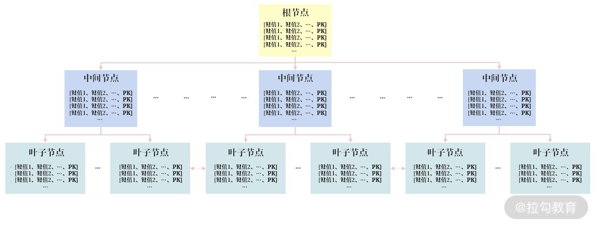

- 00 开篇词 从业务出发，开启海量 MySQL 架构设计.md.html
- 01 数字类型：避免自增踩坑.md.html
- 02 字符串类型：不能忽略的 COLLATION.md.html
- 03 日期类型：TIMESTAMP 可能是巨坑.md.html
- 04 非结构存储：用好 JSON 这张牌.md.html
- 05 表结构设计：忘记范式准则.md.html
- 06 表压缩：不仅仅是空间压缩.md.html
- 07 表的访问设计：你该选择 SQL 还是 NoSQL？.md.html
- 08 索引：排序的艺术.md.html
- 09 索引组织表：万物皆索引.md.html
- 10 组合索引：用好，性能提升 10 倍！.md.html
- 11 索引出错：请理解 CBO 的工作原理.md.html
- 12 JOIN 连接：到底能不能写 JOIN？.md.html
- 13 子查询：放心地使用子查询功能吧！.md.html
- 14 分区表：哪些场景我不建议用分区表？.md.html
- 15 MySQL 复制：最简单也最容易配置出错.md.html
- 16 读写分离设计：复制延迟？其实是你用错了.md.html
- 17 高可用设计：你怎么活用三大架构方案？.md.html
- 18 金融级高可用架构：必不可少的数据核对.md.html
- 19 高可用套件：选择这么多，你该如何选？.md.html
- 20 InnoDB Cluster：改变历史的新产品.md.html
- 21 数据库备份：备份文件也要检查！.md.html
- 22 分布式数据库架构：彻底理解什么叫分布式数据库.md.html
- 23 分布式数据库表结构设计：如何正确地将数据分片？.md.html
- 24 分布式数据库索引设计：二级索引、全局索引的最佳设计实践.md.html
- 25 分布式数据库架构选型：分库分表 or 中间件 ？.md.html
- 26 分布式设计之禅：全链路的条带化设计.md.html
- 27 分布式事务：我们到底要不要使用 2PC？.md.html
- 捐赠
10 组合索引：用好，性能提升 10 倍！
在前两讲中，我带你学习了索引的数据结构和索引组织表，相信你应该掌握了怎么在 MySQL 数据库中创建索引以及一些基本的使用技巧。
当然，前两讲我举的例子都是基于一个列进行索引排序和使用，比较简单。在实际业务中，我们会遇到很多复杂的场景，比如对多个列进行查询。这时，可能会要求用户创建多个列组成的索引，如列 a 和 b 创建的组合索引，但究竟是创建（a，b）的索引，还是（b，a）的索引，结果却是完全不同的。
这一讲，我们就来学习更贴近业务实战的组合索引的创建与使用。希望学完这一讲之后，你能在自己的业务中用好组合索引，进一步提升系统的性能。
组合索引
组合索引（Compound Index）是指由多个列所组合而成的 B+树索引，这和我们之前介绍的B+ 树索引的原理完全一样，只是之前是对一个列排序，现在是对多个列排序。
组合索引既可以是主键索引，也可以是二级索引，下图显示的是一个二级组合索引：

组合索引的 B+ 树结构
从上图可以看到，组合索引只是排序的键值从 1 个变成了多个，本质还是一颗 B+ 树索引。但是你一定要意识到（a，b）和（b，a）这样的组合索引，其排序结果是完全不一样的。而索引的字段变多了，设计上更容易出问题，如：

对组合索引（a，b）来说，因为其对列 a、b 做了排序，所以它可以对下面两个查询进行优化：
SELECT * FROM table WHERE a = ?
SELECT * FROM table WHERE a = ？ AND b = ？
上述 SQL 查询中，WHERE 后查询列 a 和 b 的顺序无关，即使先写 b = ? AND a = ？依然可以使用组合索引（a，b）。
但是下面的 SQL 无法使用组合索引（a，b），因为（a，b）排序并不能推出（b，a）排序：
SELECT * FROM table WHERE b = ?
此外，同样由于索引（a，b）已排序，因此下面这条 SQL 依然可以使用组合索引（a，b），以此提升查询的效率：
SELECT * FROM table WHERE a = ？ ORDER BY b DESC
同样的原因，索引（a，b）排序不能得出（b，a）排序，因此下面的 SQL 无法使用组合索引（a，b）：
SELECT * FROM table WHERE b = ？ ORDER BY a DESC
讲到这儿，我已经带你学习了组合索引的基本内容，接下来我们就看一看怎么在业务实战中正确地设计组合索引？
业务索引设计实战
避免额外排序
在真实的业务场景中，你会遇到根据某个列进行查询，然后按照时间排序的方式逆序展示。
比如在微博业务中，用户的微博展示的就是根据用户 ID 查询出用户订阅的微博，然后根据时间逆序展示；又比如在电商业务中，用户订单详情页就是根据用户 ID 查询出用户的订单数据，然后根据购买时间进行逆序展示。

上图是 05 节中的淘宝订单详情，根据时间进行了逆序展示。
接着我们用 TPC-H 定义的一组测试表，来展示索引相关示例的展示（TPC-H 定义的库请关注公众号 InsideMySQL，并回复 tpch，获得库表的下载链接）。
TPC-H 是美国交易处理效能委员会( TPC：Transaction Processing Performance Council ) 组织制定的，用来模拟决策支持类应用的一个测试集的规范定义，其模拟的就是一个类似电商业务，看一下其对核心业务表 rders 的设计：
CREATE TABLE `orders` (
`O_ORDERKEY` int NOT NULL,
`O_CUSTKEY` int NOT NULL,
`O_ORDERSTATUS` char(1) NOT NULL,
`O_TOTALPRICE` decimal(15,2) NOT NULL,
`O_ORDERDATE` date NOT NULL,
`O_ORDERPRIORITY` char(15) NOT NULL,
`O_CLERK` char(15) NOT NULL,
`O_SHIPPRIORITY` int NOT NULL,
`O_COMMENT` varchar(79) NOT NULL,
PRIMARY KEY (`O_ORDERKEY`),
KEY `ORDERS_FK1` (`O_CUSTKEY`),
CONSTRAINT `orders_ibfk_1` FOREIGN KEY (`O_CUSTKEY`) REFERENCES `customer` (`C_CUSTKEY`)
) ENGINE=InnoDB DEFAULT
其中：
- 字段 o_orderkey 是 INT 类型的主键；
- 字段 o_custkey 是一个关联字段，关联表 customer；
- 字段 o_orderdate、o_orderstatus、o_totalprice、o_orderpriority 用于描述订单的基本详情，分别表示下单的时间、当前订单的状态、订单的总价、订单的优先级。
在有了上述订单表后，当用户查看自己的订单信息，并且需要根据订单时间排序查询时，可通过下面的 SQL：
SELECT * FROM orders
WHERE o_custkey = 147601 ORDER BY o_orderdate DESC
但由于上述表结构的索引设计时，索引 ORDERS_FK1 仅对列 O_CUSTKEY 排序，因此在取出用户 147601 的数据后，还需要一次额外的排序才能得到结果，可通过命令EXPLAIN验证：
EXPLAIN SELECT * FROM orders
WHERE o_custkey = 147601 ORDER BY o_orderdate DESC
*************************** 1. row ***************************
id: 1
select_type: SIMPLE
table: orders
partitions: NULL
type: ref
possible_keys: ORDERS_FK1
key: ORDERS_FK1
key_len: 4
ref: const
rows: 19
filtered: 100.00
Extra: Using filesort
1 row in set, 1 warning (0.00 sec)
在上面的命令 EXPLAIN 输出结果中可以看到，SQL 语句的确可以使用索引 ORDERS_FK1，但在 Extra 列中显示的 Using filesort，表示还需要一次额外的排序才能得到最终的结果。
在 MySQL 8.0 版本中，通过命令 EXPLAIN 的额外选项，FORMAT=tree，观察得更为明确：
EXPLAIN FORMAT=tree
SELECT * FROM orders
WHERE o_custkey = 147601 ORDER BY o_orderdate DESC
*************************** 1. row ***************************
EXPLAIN: -> Sort: orders.O_ORDERDATE DESC (cost=18.98 rows=19)
-> Index lookup on orders using ORDERS_FK1 (O_CUSTKEY=147601)
可以看到，上述 SQL 的执行计划显示进行 Index lookup 索引查询，然后进行 Sort 排序，最终得到结果。
由于已对列 o_custky 创建索引，因此上述 SQL 语句并不会执行得特别慢，但是在海量的并发业务访问下，每次 SQL 执行都需要排序就会对业务的性能产生非常明显的影响，比如 CPU 负载变高，QPS 降低。
要解决这个问题，最好的方法是：在取出结果时已经根据字段 o_orderdate 排序，这样就不用额外的排序了。
为此，我们在表 orders 上创建新的组合索引 idx_custkey_orderdate，对字段（o_custkey，o_orderdate）进行索引：
ALTER TABLE orders ADD INDEX
idx_custkey_orderdate(o_custkey,o_orderdate);
这时再进行之前的 SQL，根据时间展示用户的订单信息，其执行计划为：
EXPLAIN FORMAT=tree
SELECT * FROM orders
WHERE o_custkey = 147601 ORDER BY o_orderdate
*************************** 1. row ***************************
EXPLAIN: -> Index lookup on orders using idx_custkey_orderdate (O_CUSTKEY=147601) (cost=6.65 rows=19)
可以看到，这时优化器使用了我们新建的索引 idx_custkey_orderdate，而且没有了 Sort 排序第二个过程。
避免回表，性能提升10倍
在 09 讲中，我已经讲了回表的概念：即 SQL 需要通过二级索引查询得到主键值，然后再根据主键值搜索主键索引，最后定位到完整的数据。
但是由于二级组合索引的叶子节点，包含索引键值和主键值，若查询的字段在二级索引的叶子节点中，则可直接返回结果，无需回表。这种通过组合索引避免回表的优化技术也称为索引覆盖（Covering Index）。
如下面的SQL语句：
EXPLAIN
SELECT o_custkey,o_orderdate,o_totalprice
FROM orders WHERE o_custkey = 147601\G
*************************** 1. row ***************************
id: 1
select_type: SIMPLE
table: orders
partitions: NULL
type: ref
possible_keys:
idx_custkey_orderdate,ORDERS_FK1
key: idx_custkey_orderdate
key_len: 4
ref: const
rows: 19
filtered: 100.00
Extra: NULL
执行计划显示上述SQL会使用到之前新创建的组合索引 idx_custkey_orderdate，但是，由于组合索引的叶子节点只包含（o_custkey，o_orderdate，_orderid），没有字段 o_totalprice 的值，所以需要通过 o_orderkey 回表找到对应的 o_totalprice。
再通过 EXPLAIN 的额外选项 FORMAT=tree，查看上述 SQL 的执行成本：
EXPLAIN FORMAT=tree
SELECT o_custkey,o_orderdate,o_totalprice
FROM orders WHERE o_custkey = 147601\G
*************************** 1. row ***************************
EXPLAIN: -> Index lookup on orders using idx_custkey_orderdate (O_CUSTKEY=147601) (cost=6.65 rows=19)
cost=6.65 表示的就是这条 SQL 当前的执行成本。不用关心 cost 的具体单位，你只需明白cost 越小，开销越小，执行速度越快。
如果想要避免回表，可以通过索引覆盖技术，创建(o_custkey，o_orderdate，o_totalprice）的组合索引，如：
ALTER TABLE `orders` ADD INDEX
idx_custkey_orderdate_totalprice(o_custkey,o_orderdate,o_totalprice);
然后再次通过命令 EXPLAIN 观察执行计划：
EXPLAIN
SELECT o_custkey,o_orderdate,o_totalprice
FROM orders WHERE o_custkey = 147601\G
*************************** 1. row ***************************
id: 1
select_type: SIMPLE
table: orders
partitions: NULL
type: ref
possible_keys:
idx_custkey_orderdate,ORDERS_FK1,idx_custkey_orderdate_totalprice
key: idx_custkey_orderdate_totalprice
key_len: 4
ref: const
rows: 19
filtered: 100.00
Extra: Using index
可以看到，这时优化器选择了新创建的组合索引 idx_custkey_orderdate_totalprice，同时这时Extra 列不为 NULL，而是显示 Using index，这就表示优化器使用了索引覆盖技术。
再次观察 SQL 的执行成本，可以看到 cost 有明显的下降，从 6.65 下降为了 2.94：
EXPLAIN FORMAT=tree
SELECT o_custkey,o_orderdate,o_totalprice
FROM orders WHERE o_custkey = 147601\G
*************************** 1. row ***************************
EXPLAIN: -> Index lookup on orders using idx_custkey_orderdate_totalprice (O_CUSTKEY=147601) (cost=2.94 rows=19)
我们来看下这条 SQL 输出的结果：
SELECT o_custkey,o_orderdate,o_totalprice
FROM orders
WHERE o_custkey = 147601;
+-----------+-------------+--------------+
| o_custkey | o_orderdate | o_totalprice |
+-----------+-------------+--------------+
| 147601 | 1992-05-11 | 109262.70 |
| 147601 | 1992-05-20 | 4419.68 |
| 147601 | 1993-01-14 | 208550.55 |
| 147601 | 1993-07-12 | 309815.22 |
| 147601 | 1993-10-15 | 60391.27 |
| 147601 | 1994-04-25 | 145497.64 |
| 147601 | 1994-08-11 | 130362.83 |
| 147601 | 1994-11-11 | 85054.05 |
| 147601 | 1994-12-05 | 223393.31 |
| 147601 | 1995-03-28 | 220137.39 |
| 147601 | 1995-10-05 | 126002.46 |
| 147601 | 1996-01-02 | 191792.06 |
| 147601 | 1996-02-02 | 180388.11 |
| 147601 | 1996-04-13 | 18960.24 |
| 147601 | 1996-10-09 | 294150.71 |
| 147601 | 1997-01-22 | 19440.08 |
| 147601 | 1997-02-18 | 75159.87 |
| 147601 | 1997-10-01 | 214565.88 |
| 147601 | 1998-02-16 | 131378.46 |
+-----------+-------------+--------------+
19 rows in set (0.00 sec)
可以看到，执行一共返回 19 条记录。这意味着在未使用索引覆盖技术前，这条 SQL 需要总共回表 19 次， 每次从二级索引读取到数据，就需要通过主键去获取字段 o_totalprice。
在使用索引覆盖技术后，无需回表，减少了 19 次的回表开销，
如果你想看索引覆盖技术的巨大威力，可以执行下面这条 SQL：
SELECT o_custkey,SUM(o_totalprice)
FROM orders GROUP BY o_custkey;
这条 SQL 表示返回每个用户购买订单的总额，业务侧可以根据这个结果对用户进行打标，删选出大客户，VIP 客户等。
我们先将创建的组合索引 idx_custkey_orderdate_totalprice 设置为不可见，然后查看原先的执行计划：
ALTER TABLE orders
ALTER INDEX idx_custkey_orderdate_totalprice INVISIBLE;
EXPLAIN SELECT o_custkey,SUM(o_totalprice)
FROM orders GROUP BY o_custkey
*************************** 1. row ***************************
id: 1
select_type: SIMPLE
table: orders
partitions: NULL
type: index
possible_keys:
idx_custkey_orderdate,ORDERS_FK1
key: ORDERS_FK1
key_len: 4
ref: NULL
rows: 5778755
filtered: 100.00
Extra: NULL
EXPLAIN FORMAT=tree
SELECT o_custkey,SUM(o_totalprice)
FROM orders GROUP BY o_custkey\G
*************************** 1. row ***************************
EXPLAIN: -> Group aggregate: sum(orders.O_TOTALPRICE)
-> Index scan on orders using ORDERS_FK1 (cost=590131.50 rows=5778755)
可以看到，这条 SQL 优化选择了索引 ORDERS_FK1，但由于该索引没有包含字段o_totalprice，因此需要回表，根据 rows 预估出大约要回表 5778755 次。
同时，根据 FORMAT=tree 可以看到这条 SQL 语句的执行成本在 590131.5，对比前面单条数据的回表查询，显然成本高了很多。
所以，执行这条 GROUP BY的SQL，总共需要花费 12.35 秒的时间。
SELECT o_custkey,SUM(o_totalprice)
FROM orders GROUP BY o_custkey;
...
399987 rows in set (12.35 sec)
再来对比启用索引覆盖技术后的 SQL 执行计划情况：
ALTER TABLE orders
ALTER INDEX idx_custkey_orderdate_totalprice VISIBLE;
EXPLAIN SELECT o_custkey,SUM(o_totalprice)
FROM orders GROUP BY o_custkey\G
*************************** 1. row ***************************
id: 1
select_type: SIMPLE
table: orders
partitions: NULL
type: index
possible_keys:
idx_custkey_orderdate,ORDERS_FK1,idx_custkey_orderdate_totalprice
key: idx_custkey_orderdate_totalprice
key_len: 14
ref: NULL
rows: 5778755
filtered: 100.00
Extra: Using index
1 row in set, 1 warning (0.00 sec)
可以看到，这次的执行计划提升使用了组合索引 idx_custkey_orderdate_totalprice，并且通过Using index 的提示，表示使用了索引覆盖技术。
SELECT o_custkey,SUM(o_totalprice)
FROM orders GROUP BY o_custkey;
...
399987 rows in set (1.04 sec)
再次执行上述 SQL 语句，可以看到执行时间从之前的 12.35 秒缩短为了 1.04 秒，SQL 性能提升了 10 倍多。
这就是索引覆盖技术的威力，而且这还只是基于 orders 表总共 600 万条记录。若表 orders 的记录数越多，需要回表的次数也就越多，通过索引覆盖技术性能的提升也就越明显。
总结
这一讲，我在前几讲索引基础上，带你了解了组合索引。
组合索引也是一颗 B+ 树，只是索引的列由多个组成，组合索引既可以是主键索引，也可以是二级索引。通过今天的学习，我们可以归纳组合索引的三大优势：
- 覆盖多个查询条件，如（a，b）索引可以覆盖查询 a = ? 或者 a = ? and b = ?；
- 避免 SQL 的额外排序，提升 SQL 性能，如 WHERE a = ? ORDER BY b 这样的查询条件；
- 利用组合索引包含多个列的特性，可以实现索引覆盖技术，提升 SQL 的查询性能，用好索引覆盖技术，性能提升 10 倍不是难事。
© 2019 - 2023 Liangliang Lee. Powered by gin and hexo-theme-book.